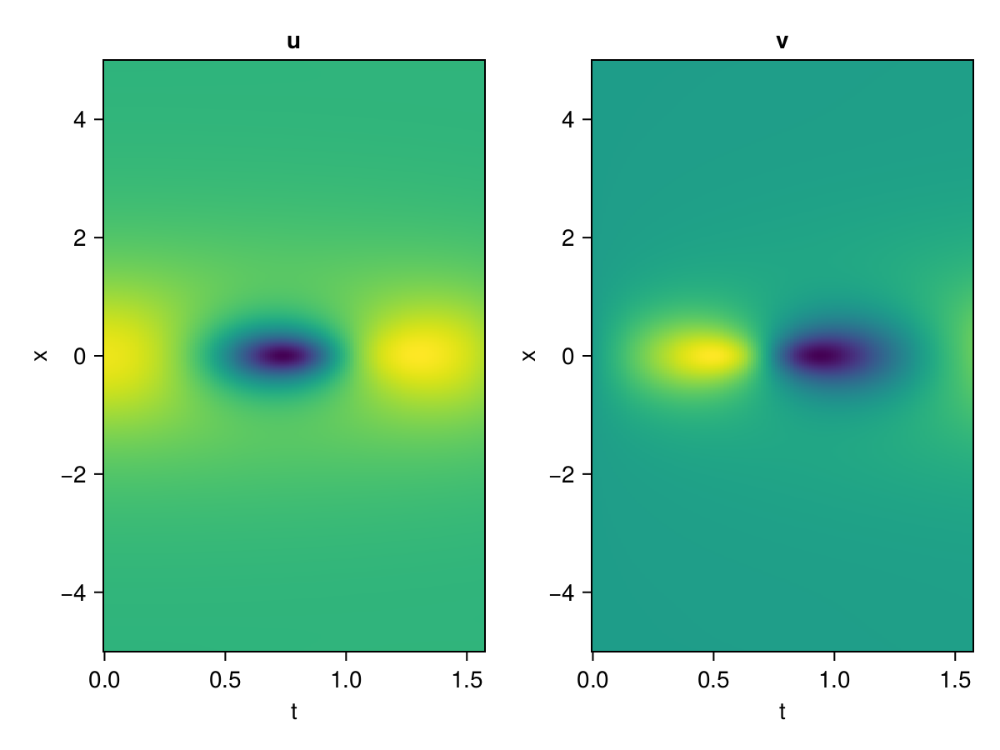
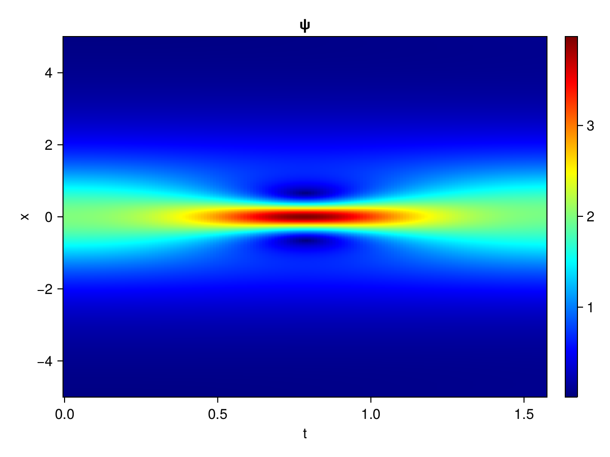
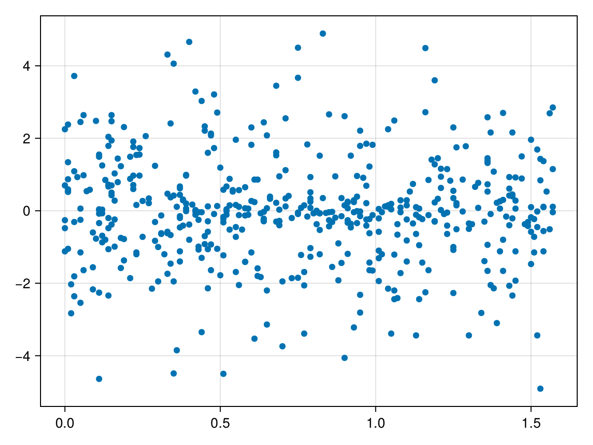

Schrödinger equation
The nonlinear Shrödinger equation is given by
\[\mathrm{i} \partial_t \psi=-\frac{1}{2} \sigma \partial_{x x} \psi-\beta|\psi|^2 \psi\]
Let $\sigma=\beta=1, \psi=u+v i$, the equation can be transformed into a system of partial differential equations
using ModelingToolkit, IntervalSets, Sophon, CairoMakie
using Optimization, OptimizationOptimJL, Zygote
@parameters x,t
@variables u(..), v(..)
Dₜ = Differential(t)
Dₓ² = Differential(x)^2
eqs=[Dₜ(u(x,t)) ~ -Dₓ²(v(x,t))/2 - (abs2(v(x,t)) + abs2(u(x,t))) * v(x,t),
Dₜ(v(x,t)) ~ Dₓ²(u(x,t))/2 + (abs2(v(x,t)) + abs2(u(x,t))) * u(x,t)]
bcs = [u(x, 0.0) ~ 2sech(x),
v(x, 0.0) ~ 0.0,
u(-5.0, t) ~ u(5.0, t),
v(-5.0, t) ~ v(5.0, t)]
domains = [x ∈ Interval(-5.0, 5.0),
t ∈ Interval(0.0, π/2)]
@named pde_system = PDESystem(eqs, bcs, domains, [x,t], [u(x,t),v(x,t)])\[ \begin{align} \frac{\mathrm{d}}{\mathrm{d}t} u\left( x, t \right) =& - \frac{1}{2} \frac{\mathrm{d}}{\mathrm{d}x} \frac{\mathrm{d}}{\mathrm{d}x} v\left( x, t \right) - v\left( x, t \right) \left( \left|u\left( x, t \right)\right|^{2} + \left|v\left( x, t \right)\right|^{2} \right) \\ \frac{\mathrm{d}}{\mathrm{d}t} v\left( x, t \right) =& \frac{1}{2} \frac{\mathrm{d}}{\mathrm{d}x} \frac{\mathrm{d}}{\mathrm{d}x} u\left( x, t \right) + u\left( x, t \right) \left( \left|u\left( x, t \right)\right|^{2} + \left|v\left( x, t \right)\right|^{2} \right) \end{align} \]
pinn = PINN(u = Siren(2,1; hidden_dims=16,num_layers=4, omega = 1.0),
v = Siren(2,1; hidden_dims=16,num_layers=4, omega = 1.0))
sampler = QuasiRandomSampler(500, (200,200,20,20))
strategy = NonAdaptiveTraining(1,(10,10,1,1))
prob = Sophon.discretize(pde_system, pinn, sampler, strategy)OptimizationProblem. In-place: true
u0: ComponentVector{Float64}(u = (layer_1 = (weight = [-0.28148072957992554 0.3765137791633606; -0.007441461086273193 0.06784766912460327; … ; -0.4436623454093933 -0.39990711212158203; -0.4578591585159302 0.26059550046920776], bias = [0.0; 0.0; … ; 0.0; 0.0;;]), layer_2 = (weight = [0.09197410941123962 -0.2952418327331543 … 0.07683650404214859 0.3281886875629425; -0.20839600265026093 -0.392936110496521 … 0.09355960041284561 -0.6007857918739319; … ; -0.01204004231840372 -0.49667131900787354 … 0.5732526779174805 -0.36555010080337524; -0.4038725793361664 -0.13467004895210266 … 0.4926965832710266 0.4998171925544739], bias = [0.0; 0.0; … ; 0.0; 0.0;;]), layer_3 = (weight = [-0.5282739996910095 0.25803595781326294 … -0.6061610579490662 -0.578675389289856; -0.10182252526283264 0.24441596865653992 … 0.12885533273220062 0.29429003596305847; … ; 0.015747955068945885 -0.3338328003883362 … -0.08156219124794006 0.26409339904785156; -0.35373082756996155 -0.2732238471508026 … -0.5651240348815918 -0.5102528929710388], bias = [0.0; 0.0; … ; 0.0; 0.0;;]), layer_4 = (weight = [0.18454112112522125 -0.23387834429740906 … 0.3885240852832794 -0.15217730402946472; 0.5512431859970093 0.2556125521659851 … 0.07072461396455765 0.07852187007665634; … ; -0.5288878083229065 0.20751918852329254 … 0.3450299799442291 -0.27742329239845276; -0.4565025866031647 -0.2505161762237549 … -0.41379597783088684 0.44299522042274475], bias = [0.0; 0.0; … ; 0.0; 0.0;;]), layer_5 = (weight = [0.5223219990730286 -0.5761218667030334 … 0.5493621826171875 -0.25326311588287354], bias = [0.0;;])), v = (layer_1 = (weight = [-0.13127869367599487 0.4321509599685669; 0.07272613048553467 -0.2863041162490845; … ; -0.14977151155471802 0.49374616146087646; -0.18839305639266968 0.4737963080406189], bias = [0.0; 0.0; … ; 0.0; 0.0;;]), layer_2 = (weight = [0.47620031237602234 -0.04034750908613205 … 0.5434295535087585 0.1607598215341568; 0.045374687761068344 -0.5405473709106445 … 0.3253864347934723 -0.09175378829240799; … ; -0.20964036881923676 0.37671634554862976 … 0.07813620567321777 0.31316569447517395; -0.04060622304677963 -0.11384373158216476 … 0.3468744158744812 0.14006653428077698], bias = [0.0; 0.0; … ; 0.0; 0.0;;]), layer_3 = (weight = [0.2611978352069855 0.4321693181991577 … 0.3338090777397156 -0.41099071502685547; -0.3266908526420593 0.6072747111320496 … 0.15865230560302734 -0.472305566072464; … ; -0.20436899363994598 -0.42431360483169556 … -0.10423365980386734 -0.48325031995773315; 0.5612537264823914 0.5443798899650574 … 0.27224987745285034 0.1791723072528839], bias = [0.0; 0.0; … ; 0.0; 0.0;;]), layer_4 = (weight = [-0.5714466571807861 0.13124530017375946 … -0.2725354731082916 0.4547334909439087; -0.2681514024734497 -0.21465928852558136 … 0.11594315618276596 -0.2738666832447052; … ; 0.25825831294059753 -0.030466677621006966 … -0.4640370309352875 -0.6089351773262024; 0.07057014852762222 -0.46624457836151123 … -0.49442726373672485 0.11406989395618439], bias = [0.0; 0.0; … ; 0.0; 0.0;;]), layer_5 = (weight = [-0.5122275948524475 -0.5752302408218384 … -0.2537533938884735 -0.1724775731563568], bias = [0.0;;])))Now we train the neural nets and resample data while training.
function train(pde_system, prob, sampler, strategy, resample_period = 500, n=10)
bfgs = BFGS()
res = Optimization.solve(prob, bfgs; maxiters=2000)
for i in 1:n
data = Sophon.sample(pde_system, sampler)
prob = remake(prob; u0=res.u, p=data)
@showprogress res = Optimization.solve(prob, bfgs; maxiters=resample_period)
end
return res
end
res = train(pde_system, prob, sampler, strategy)u: ComponentVector{Float64}(u = (layer_1 = (weight = [-0.3317509713899785 0.7762733412023942; 0.11089426147179111 0.07432204517206108; … ; -0.9157516716364861 -0.46919936727848793; -0.48621297633189564 -0.19019379980805537], bias = [-0.2778633810415601; -0.1454526700603535; … ; 0.12429258437459464; 0.6384863513738158;;]), layer_2 = (weight = [-0.32578830249284596 -0.4057117867118364 … 0.20817242588838086 0.4192486171292163; -0.2964282977512682 -0.421185883272056 … -0.04775499911228822 -0.5428287382922012; … ; -0.22283972080338096 -0.5496355516479035 … 0.48211560307422086 -0.4367168430820013; -0.6042592527053248 -0.4016214924971638 … 1.0649329884104308 0.6866739771619297], bias = [0.11013154460045335; 0.28247945805628666; … ; -0.19346033479227792; 0.1993874525204002;;]), layer_3 = (weight = [-0.2808998647963159 0.16641201452005988 … -0.5272374222794854 -0.20760928396512213; -0.12046471423560523 0.4015628651268775 … 0.0034401263233670627 0.4482183913843372; … ; -0.11194963386353231 -0.31181730300398625 … -0.07304334552557962 0.23242538376128993; -0.5446036599587826 -0.243974271838796 … -0.5219751771588373 -0.6147722445103365], bias = [-0.02738270325997118; -0.10759958110967904; … ; -0.4301621388893537; -0.1548276510022564;;]), layer_4 = (weight = [0.2277432134670499 -0.41765743044725584 … 0.7650855592204845 0.30909277441282107; 0.769233216746024 0.5182538987375988 … -0.1916304188117957 -0.40998941608579653; … ; -0.5785432228633616 0.6271174759031175 … 0.08041016942083275 -0.5305136238519899; -0.22544632417448213 0.0883508085792849 … -0.3562767029934268 0.4349252606470582], bias = [0.2742205117537649; -0.3066238006868207; … ; -0.6449313563354736; -0.36896546909155503;;]), layer_5 = (weight = [0.5812329930300894 -1.043393272436511 … 0.2114223043568435 -0.7210114079405172], bias = [-0.1258145066322824;;])), v = (layer_1 = (weight = [-0.015205343197511711 0.7667702954505821; 0.1553852048593128 -0.6443348088539101; … ; -0.7532623006825553 0.7737757344817329; -0.010233073901480634 0.5804352384656506], bias = [-0.42834872348714537; 0.09995882515872553; … ; -0.18842174972534523; 0.10052097120836394;;]), layer_2 = (weight = [0.3971152877042725 0.05920929091671561 … 0.4068145613335094 -0.07478247151771195; -0.5931947677842689 -0.08654773068109028 … -0.08686214809228343 -0.3272251192528969; … ; -0.09900244427419157 0.29287737798510194 … 0.21377336623469195 0.30668504325795953; 0.40888539443252064 -0.4796092454680614 … 0.5497068386475165 0.5569744843276017], bias = [-0.3755889506727577; -0.16808980515798505; … ; -0.3476697550674349; 0.8199220410349278;;]), layer_3 = (weight = [0.4824645713326284 0.29660716391746983 … 0.25747757647218966 0.024609438469526346; -0.4270845631567775 -0.024724624997294112 … 0.02222372344906515 -0.7361280314998068; … ; -0.09843756958348154 -0.47684371302898526 … -0.15326774212300845 -0.2720128522761755; 0.12342128375260714 -0.0651223642419138 … 0.34734707155648237 0.0468829205092267], bias = [-0.3230792944878619; 0.44517639992315866; … ; -0.07723410756018269; -0.44849646394261083;;]), layer_4 = (weight = [-0.361144453266962 0.5038419464908002 … -0.17355571897624222 0.12383963684971291; 0.2288047654525934 0.5720922257608709 … 0.577744789827819 -0.10092459971991738; … ; 0.25571076624402667 -0.0037122666978249364 … -0.14790331496838827 -0.7197399505855625; 0.07751620380599132 -0.4316838993437969 … -0.48388549323598173 -0.10256561851846854], bias = [0.5830954171224491; 0.027090230278256276; … ; 0.1466003413067836; 0.2509157051061757;;]), layer_5 = (weight = [-1.1592704386332862 -1.1682671001281941 … -0.5044515984286388 -0.09939493744394204], bias = [0.16879314663921868;;])))phi = pinn.phi
ps = res.u
xs, ts= [infimum(d.domain):0.01:supremum(d.domain) for d in pde_system.domain]
u = [sum(phi.u(([x,t]), ps.u)) for x in xs, t in ts]
v = [sum(phi.v(([x,t]), ps.v)) for x in xs, t in ts]
ψ = @. sqrt(u^2+ v^2)
axis = (xlabel="t", ylabel="x", title="u")
fig, ax1, hm1 = heatmap(ts, xs, u', axis=axis)
ax2, hm2= heatmap(fig[1, end+1], ts, xs, v', axis= merge(axis, (; title="v")))
display(fig)
axis = (xlabel="t", ylabel="x", title="ψ")
fig, ax1, hm1 = heatmap(ts, xs, ψ', axis=axis, colormap=:jet)
Colorbar(fig[:, end+1], hm1)
display(fig)
Customize Sampling
Bascially any sampling method is supportted. For example we can sample data according to the predicted solution.
using StatsBase
data = vec([[x, t] for x in xs, t in ts])
wv = vec(ψ)
new_data = wsample(data, wv, 500)
new_data = reduce(hcat, new_data)
fig, ax = scatter(new_data[2,:], new_data[1,:])
prob.p[1] = new_data
prob.p[2] = new_data
prob = remake(prob; u0 = res.u)
# res = Optimization.solve(prob, bfgs; maxiters=1000)OptimizationProblem. In-place: true
u0: ComponentVector{Float64}(u = (layer_1 = (weight = [-0.3317509713899785 0.7762733412023942; 0.11089426147179111 0.07432204517206108; … ; -0.9157516716364861 -0.46919936727848793; -0.48621297633189564 -0.19019379980805537], bias = [-0.2778633810415601; -0.1454526700603535; … ; 0.12429258437459464; 0.6384863513738158;;]), layer_2 = (weight = [-0.32578830249284596 -0.4057117867118364 … 0.20817242588838086 0.4192486171292163; -0.2964282977512682 -0.421185883272056 … -0.04775499911228822 -0.5428287382922012; … ; -0.22283972080338096 -0.5496355516479035 … 0.48211560307422086 -0.4367168430820013; -0.6042592527053248 -0.4016214924971638 … 1.0649329884104308 0.6866739771619297], bias = [0.11013154460045335; 0.28247945805628666; … ; -0.19346033479227792; 0.1993874525204002;;]), layer_3 = (weight = [-0.2808998647963159 0.16641201452005988 … -0.5272374222794854 -0.20760928396512213; -0.12046471423560523 0.4015628651268775 … 0.0034401263233670627 0.4482183913843372; … ; -0.11194963386353231 -0.31181730300398625 … -0.07304334552557962 0.23242538376128993; -0.5446036599587826 -0.243974271838796 … -0.5219751771588373 -0.6147722445103365], bias = [-0.02738270325997118; -0.10759958110967904; … ; -0.4301621388893537; -0.1548276510022564;;]), layer_4 = (weight = [0.2277432134670499 -0.41765743044725584 … 0.7650855592204845 0.30909277441282107; 0.769233216746024 0.5182538987375988 … -0.1916304188117957 -0.40998941608579653; … ; -0.5785432228633616 0.6271174759031175 … 0.08041016942083275 -0.5305136238519899; -0.22544632417448213 0.0883508085792849 … -0.3562767029934268 0.4349252606470582], bias = [0.2742205117537649; -0.3066238006868207; … ; -0.6449313563354736; -0.36896546909155503;;]), layer_5 = (weight = [0.5812329930300894 -1.043393272436511 … 0.2114223043568435 -0.7210114079405172], bias = [-0.1258145066322824;;])), v = (layer_1 = (weight = [-0.015205343197511711 0.7667702954505821; 0.1553852048593128 -0.6443348088539101; … ; -0.7532623006825553 0.7737757344817329; -0.010233073901480634 0.5804352384656506], bias = [-0.42834872348714537; 0.09995882515872553; … ; -0.18842174972534523; 0.10052097120836394;;]), layer_2 = (weight = [0.3971152877042725 0.05920929091671561 … 0.4068145613335094 -0.07478247151771195; -0.5931947677842689 -0.08654773068109028 … -0.08686214809228343 -0.3272251192528969; … ; -0.09900244427419157 0.29287737798510194 … 0.21377336623469195 0.30668504325795953; 0.40888539443252064 -0.4796092454680614 … 0.5497068386475165 0.5569744843276017], bias = [-0.3755889506727577; -0.16808980515798505; … ; -0.3476697550674349; 0.8199220410349278;;]), layer_3 = (weight = [0.4824645713326284 0.29660716391746983 … 0.25747757647218966 0.024609438469526346; -0.4270845631567775 -0.024724624997294112 … 0.02222372344906515 -0.7361280314998068; … ; -0.09843756958348154 -0.47684371302898526 … -0.15326774212300845 -0.2720128522761755; 0.12342128375260714 -0.0651223642419138 … 0.34734707155648237 0.0468829205092267], bias = [-0.3230792944878619; 0.44517639992315866; … ; -0.07723410756018269; -0.44849646394261083;;]), layer_4 = (weight = [-0.361144453266962 0.5038419464908002 … -0.17355571897624222 0.12383963684971291; 0.2288047654525934 0.5720922257608709 … 0.577744789827819 -0.10092459971991738; … ; 0.25571076624402667 -0.0037122666978249364 … -0.14790331496838827 -0.7197399505855625; 0.07751620380599132 -0.4316838993437969 … -0.48388549323598173 -0.10256561851846854], bias = [0.5830954171224491; 0.027090230278256276; … ; 0.1466003413067836; 0.2509157051061757;;]), layer_5 = (weight = [-1.1592704386332862 -1.1682671001281941 … -0.5044515984286388 -0.09939493744394204], bias = [0.16879314663921868;;])))